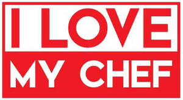

Trade Mark Journal No.2025/038 19 September 2025
UK00004261633 9 September 2025 (9,35)

International priority date claimed: 4 September 2025
(European Union Intellectual Property Office (EUIPO))
(019242021)
- Class 9
- Software; Computer e-commerce software; computer e-commerce software to allow users to perform electronic business transactions via a global computer network; downloadable software applications, in particular for the ordering, supply, or exchange of goods and equipment, in the food industry and catering trade; downloadable software in the form of applications for mobile devices enabling users to share information and resources, in particular in the food industry and catering trade; newsletters, electronic newspapers and magazines (downloadable); databases (electronic).
- Class 35
- Advertising; business management; business administration; retail and wholesale services for appliances and equipment for professionals in the food industry and catering trade, in particular, food and beverage preparation machines, electromechanical, hand tools and implements [hand-operated] for cooking, cooking apparatus and installations, refrigerating and freezing appliances and equipment, kitchen utensils and utensils for household , crockery and table linen; presentation and demonstration of the aforementioned goods on all means of communication, for sale purpose; on-line computerised ordering services in the field of kitchen and restaurant equipment; business promotion of goods and services on behalf of third parties in the food industry and catering trade; provision of searchable databases available online via computer or mobile networks containing information on the food industry, catering trade and equipment for use in that field; management of customer service, namely responding to customer requests for third parties in the field of equipment for the food industry, catering trade and restaurants; provision of information on commercial products for retailers and consumers; dissemination of third-party advertisements, in physical or digital form, offering products for sale or exchange; internet commerce services, namely, bringing sellers and buyers together in a single online interface; provision of an online product evaluation database for buyers and sellers (survey services); provision of online sales areas for buyers and sellers of products.
Wim Van Gorp
Representative: Wynne-Jones IP Limited